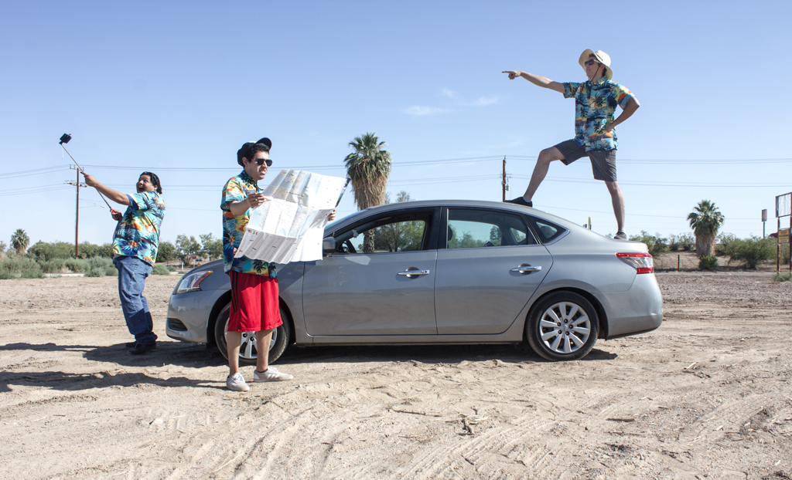

Ivotron's Nuts & Bolts
By Ivan Lopez

Please join me in a ceremonial smashing of a bottle on this
proverbial ship that is Nuts & Bolts. Ok, I won’t actually
smash a bottle because, well, danger, but all the same!
Welcome to Nuts & Bolts Ivotron’s official blog for anything
I find interesting regarding movies, games, comics, etc. I
created this initially as a newsletter back when I was actively
photographing Cosplay, and attempting to expand Ivotron as a business.
Overtime, that aspiration dwindled and I was left with a foundation
of something I didn't want to die. Thus, I decided to make Ivotron into
my personal nerdy persona. It’s my way of organizing my life by
dividing up my interests, whilst also filling me with a sense of purpose.
I spent many years, countless hours, and several coffees teaching
myself how to code so that I could create something from scratch;
finally that has come to fruition and I’m happy to share it with anyone
who has the time.

I currently don't have a plan regarding content but I hope to figure
it out as I go, and just write about whatever I feel like. Although,
I do wish to contribute something of use to readers, I’m going to
try and not let that completely dictate what I output. To some extent,
I may just use this as a diary of sorts, a place to jot down my thoughts
about the subjects mentioned above.
So, now I'll go play many games, watch many anime, and many comics/books
so that I may write about it later. I do hope you enjoy any amount of
time you spend here. Please do not hesitate to inquire, comment, or
reach out to me for any reason. I'll try to respond as best I can!
Thank you all for reading.
See you, internet people.
